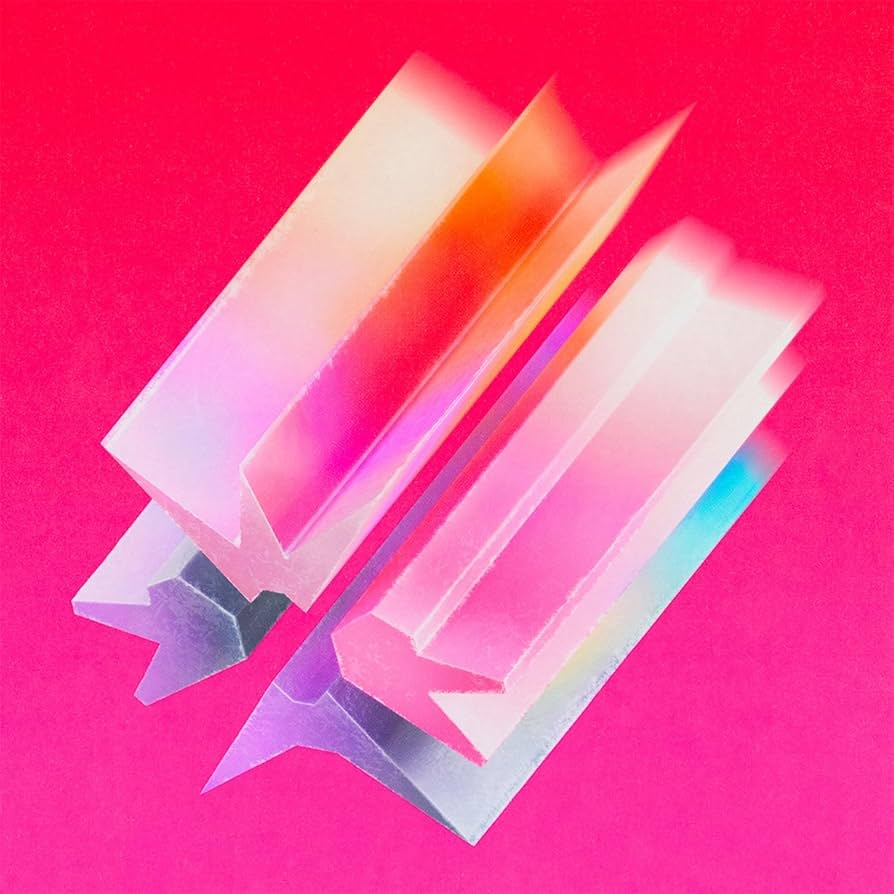

Silence Outlives the Earth

Ficha técnica
- Artista: ERRA
- Año: 2026
- Género: Metalcore Progresivo
Canciones
- Stelliform
- Further Eden
- Gore of Being
- Black Cloud
- Cicada Siren
- Echo Sonata
- Lucid Threshold
- Spiral (Of Liminal Infinity)
- I. The Many Names of God
- II. In the Gut of the Wolf
- III. Twilight in the Reflection of Dreams
Comentario
Es el séptimo álbum de estudio de la banda estadounidense de metalcore progresivo ERRA.
El disco destaca por su equilibrio entre pasajes melódicos etéreos, una producción moderna y contundente, y letras de tono oscuro y reflexivo sobre el duelo.